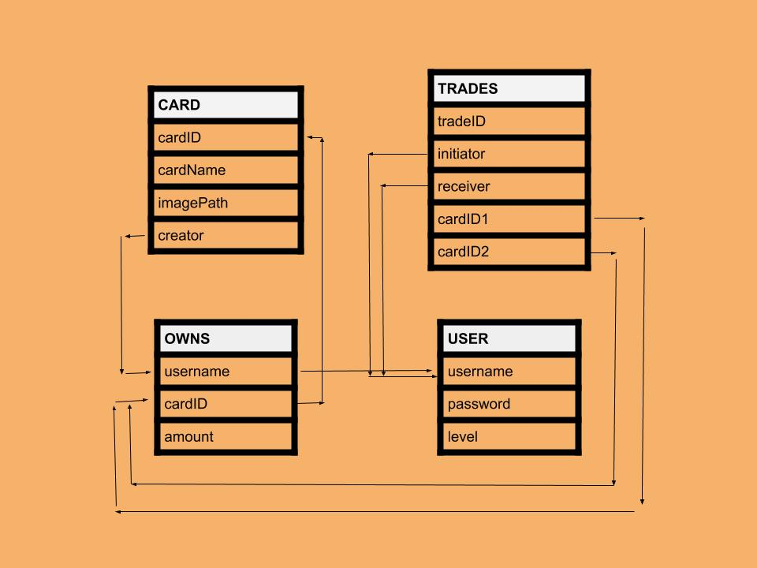

Our project is a platform for exchanging personalized trading cards. The trading card platform is called “Spitting Image”. Users will upload their own art and description and the site will generate a formatted card image which will be accessible by every other user. A user will be able to add any of their own cards to their deck as they see fit, but they must trade their cards to user others to receive cards that they did not create. Duplicate cards in a deck are allowed. At first, a user will only be able to put 10 cards in their deck. At certain milestones based on how many cards created by others they own, their max deck size will increase. Trades can be initiated between any two users, and only one card may be exchanged at a time. A database solution is needed for this project because there is a set of existing cards, as well as a set of existing instances of cards in users’ decks. Images for cards will need to be accessed by database so that a user’s deck can be displayed. Proposed trades would also be best stored in a database.
Use case 1 -Users will have personal usernames that are unique to each person and a password that are stored in the database. Use case 2- After a certain amount of incorrect password attempts, a user must reset their password through a link sent to the email stored with that username. Use case 3- Users will be able to create their own trading cards with their own artwork attached to the card. Only users who created the card can edit the card. Use case 4- Users will be able to see everyone else’s trade decks including their own. This takes the form of a small card gallery. Use case 5- Users will be able to initiate a trade with other users in order to obtain their artwork. Use case 6- Depending on how many cards users have obtained made by other users they can level themselves up in order to have the capability to hold more cards than initially allowed. Use case 7- Users will be allowed to obtain as many of the same card as long as they were the creator and they are under or equal to their max allowed trading cards. Use case 8- Users will be able to see all currently proposed trades and click a button on a trade they see that starts a new trade for that card to maybe change the original trade propers mind. Use case 9- Users will be able to see all trades proposed to them. Use case 10- Users can see all cards created along with username attached.
Roles: Ben Shapiro: Front-End Marwan Johnstone: Back-end Harper Shapiro: Designated Primary Hacker 円 (front-end and backend) Assignments: Case 1 - All Case 2 - Marwan Case 3 - Harper Case 4 - Ben, Marwan Case 5 - All Case 6 - All Case 7 - Marwan Case 8 - Ben Case 9 - Ben Case 10 - Harper
Card (cardID, cardName, imagePath, creator) User (username, password (encrypted), level) Owns (username, cardID, amount) Trades (tradeID, initiator, receiver, cardID1, cardID2)
